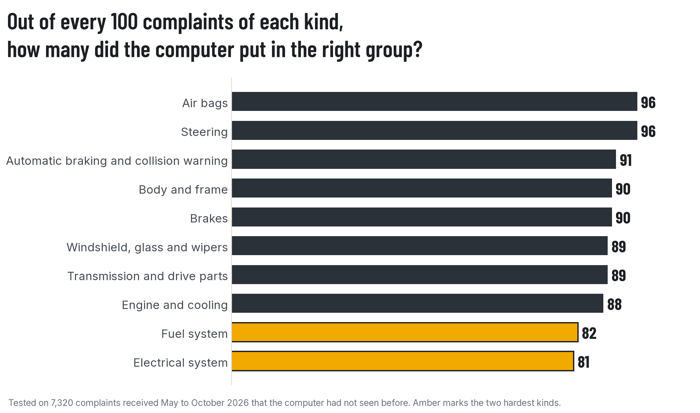

How to read this site
Five parts, in the order we worked. Each page ends with a link to the next one.
- 1IntroductionWhat owner complaints are, how many there are, and why sorting them is hard.
- 2DataThe NHTSA files, the labels, the cleaning, and the leaks we found and removed.
- 3ModelsThree neural networks, from a word-count baseline to DistilBERT.
- 4ResultsScores with intervals, tests, mistakes, and which words drive a prediction.
- 5ConclusionWhat we found, in plain language.

A class project using public NHTSA complaint data. Not an NHTSA product, and not safety advice.
Explore
Hands-on pages that sit beside the story. They use the same data and the same results.